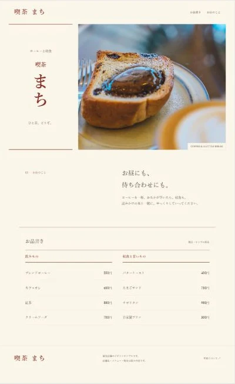

YUJI SHIMONO / PORTFOLIO
広告デザイン
商品やサービスの魅力を整理し、目に留まり、伝わるクリエイティブへ。
AD DESIGN / THUMBNAIL SAMPLES
広告・サムネイルのサンプル作品
画像を選ぶと、作品全体を大きくご覧いただけます。
YUJI SHIMONO / PORTFOLIO
商品やサービスの魅力を整理し、目に留まり、伝わるクリエイティブへ。
AD DESIGN / THUMBNAIL SAMPLES
画像を選ぶと、作品全体を大きくご覧いただけます。